We shall use the word parameter to mean the name given to any quantity which is associated with a specified numerical value. The numerical value will be known as the parameter value. Integer and real values may be associated with parameters in two ways. The easiest way is simply to set a parameter to a specified parameter value, or to obtain a parameter from a previously defined parameter by simple arithmetic operations (addition, subtraction, multiplication and division). The second way is to have a parameter value specified in a do-loop, or to obtain a parameter from one specified in a do-loop (see Section 3.2.4 below).
The syntax for associating a parameter with a specific value is given in Figure 3.5.
The two character string in data field 1 (F.1) specifies the way in which the parameter value is to be assigned. If the first of these characters is a I, the assigned value is an integer; the parameter will be referred to as an integer parameter or integer index. Alternatively, if the first of these characters is an R or an A, the assigned value is a real and the parameter will be called a real parameter.
If the string is IE, the integer parameter int-p-name named in field 2 is to be given the integer value specified in field 4. The parameter may be up to ten characters long, and the integer value can occupy up to twelve positions.
If the string is IR, the integer parameter value named in field 2 is to be assigned the value of the nearest integer (closer to zero) to the value of the real parameter rl-p-name specified in field 3. The parameter appearing in field 3 must have already been assigned a value.
If the string is IA, the integer parameter named in field 2 is to be formed by adding the value of the parameter int-p-name referred to in field 3 to the integer value specified in field 4. The parameter appearing in field 3 must have already been assigned a value.
If the string is IS, the integer parameter named in field 2 is to be formed by subtracting the value of the parameter int-p-name referred to in field 3 from the integer value specified in field 4. The parameter appearing in field 3 must have already been assigned a value.
If the string is IM, the value of the integer parameter named in field 2 is to be obtained by multiplying the value already specified for the parameter in field 3 by the integer value specified in field 4. Once again, the parameter appearing in field 3 must have already been assigned a value.
If the string is ID, the value of the integer parameter named in field 2 is to be obtained by dividing the integer value specified in field 4 by the value already specified for the parameter in field 3. Once again, the parameter appearing in field 3 must have already been assigned a value.
If the string is I=, the value of the integer parameter named in field 2 is to be set to the integer value specified for the parameter in field 3. The parameter appearing in field 3 must have already been assigned a value.
If the string is I+, the value of the integer parameter named in field 2 is to be calculated by adding the values of the integer parameters int-p-name referred to in fields 3 and 5. The parameters appearing in fields 3 and 5 must have already been assigned values.
If the string is I-, the value of the integer parameter named in field 2 is to be calculated by subtracting the value of the integer parameters int-p-name referred to in field 5 from that in field 3. The parameters appearing in fields 3 and 5 must have already been assigned values.
If the string is I*, the value of the integer parameter named in field 2 is to be formed as the product of the values already specified for the integer parameters in fields 3 and 5. The parameters appearing in fields 3 and 5 must have already been assigned values.
Finally, if the string is I/, the value of the integer parameter named in field 2 is to be formed by dividing the value specified for the integer parameters in field 3 by that specified for the integer parameters in field 5. Once again, the parameters appearing in fields 3 and 5 must have already been assigned values.
Note that, as an array name can only be a maximum of 10 characters long, any integer parameter which is to be the index of an array can only be at most seven characters in length. Furthermore, such a parameter name may not include the characters ``('', ``)'' or ``,''.
If the string is RE, the real parameter rl-p-name named in field 2 is to be given the real value specified in field 4. The parameter may be up to ten characters long, and the real value can occupy up to twelve positions.
If the string is RI, the real parameter value named in field 2 is to be assigned the equivalent floating point value of the integer parameter int-p-name specified in field 3. The parameter appearing in field 3 must have already been assigned a value.
If the string is RA, the value of the real parameter named in field 2 is to be formed by adding the value of the real parameter rl-p-name referred to in field 3 to the real value specified in field 4. The parameter appearing in field 3 must have already been assigned a value.
If the string is RS, the value of the real parameter named in field 2 is to be formed by subtracting the value of the real parameter rl-p-name referred to in field 3 from the real value specified in field 4. The parameter appearing in field 3 must have already been assigned a value.
If the string is RM, the value of the parameter named in field 2 is to be formed by multiplying the value specified for the real parameter in field 3 by the real value specified in field 4. Once again, the parameter appearing in field 3 must have already been assigned a value.
If the string is RD, the value of the parameter named in field 2 is to be formed by dividing the real value specified in field 4 by the value specified for the real parameter in field 3. The parameter appearing in field 3 must have already been assigned a value.
If the string is RF,
the value of the parameter named in field 2
is to be formed by evaluating the function named in field 3 at the
real value specified in field 4. The function funct-name --
and its mathematical equivalent  -- may be one of: ABS
(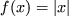), SQRT (
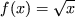), EXP (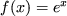), LOG (
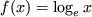), LOG10 (
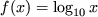), SIN (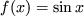), COS (
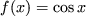), TAN (
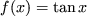), ARCSIN (
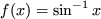), ARCCOS (
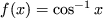), ARCTAN (
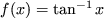),
HYPSIN (
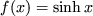), HYPCOS (
-- may be one of: ABS
(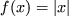), SQRT (
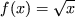), EXP (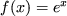), LOG (
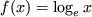), LOG10 (
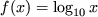), SIN (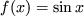), COS (
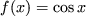), TAN (
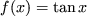), ARCSIN (
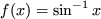), ARCCOS (
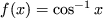), ARCTAN (
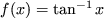),
HYPSIN (
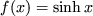), HYPCOS (
 ) or
HYPTAN (
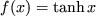).
Certain of the functions may only be
evaluated for arguments lying within restricted ranges. The argument
for SQRT must be non-negative, those for LOG and LOG10 must be strictly positive, and those for ARCSIN and ARCCOS must be no larger than one in absolute value.
) or
HYPTAN (
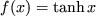).
Certain of the functions may only be
evaluated for arguments lying within restricted ranges. The argument
for SQRT must be non-negative, those for LOG and LOG10 must be strictly positive, and those for ARCSIN and ARCCOS must be no larger than one in absolute value.
If the string is R=, the parameter value named in field 2 is to be assigned the value of the real parameter rl-p-name referred to in field 3. The parameter appearing in field 3 must have already been assigned a value.
If the string is R+, the parameter value named in field 2 is to be formed as the sum of the values of the real parameters rl-p-name referred to in fields 3 and 5. The parameters appearing in fields 3 and 5 must have already been assigned values.
If the string is R-, the parameter value named in field 2 is to be formed by subtracting the value of the real parameter rl-p-name referred to in field 5 from the value of that referred to in field 3. The parameters appearing in fields 3 and 5 must have already been assigned values.
If the string is R*, the value of the real parameter named in field 2 is to be formed as the product of the values already specified for the real parameters in fields 3 and 5. Once again, the parameters appearing in fields 3 and 5 must have already been assigned values.
If the string is R/, the parameter value named in field 2 is to be formed by dividing the value of the real parameter rl-p-name referred to in field 3 by the value of that referred to in field 5. The parameters appearing in fields 3 and 5 must have already been assigned values.
Finally, if the string is R(, the value of the parameter named in field 2 is to be formed by evaluating the function named in field 3 at the value of the real parameter rl-p-name specified in field 5. The function (and its mathematical equivalent) may be any of those named in the RF paragraph and the restrictions on the allowed argument ranges given above still apply.
If the first character in field 1 is an A, an array of real parameters is to be defined. The particular type of definition is as for the R cards, excepting that any name, r-p-a-name, referred to in fields 2, 3 or 5, with the exception of integer parameters named in field 3 of AI cards and functions named in the same field of AF and A( cards, must be a real parameter array name with a valid index.
Parameter assignments may be made at any point within the SDIF file between the NAME and ENDATA indicator cards. It is anticipated that parameters will be used to store values such as the total number of variables and groups, which are used later in array definitions, and to allow a user to enter regular and repetitious data in a straightforward and compact way.